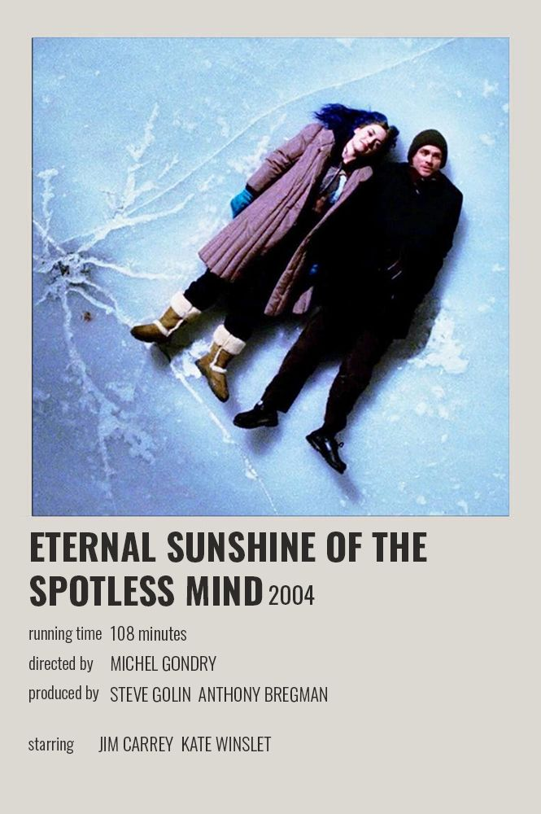
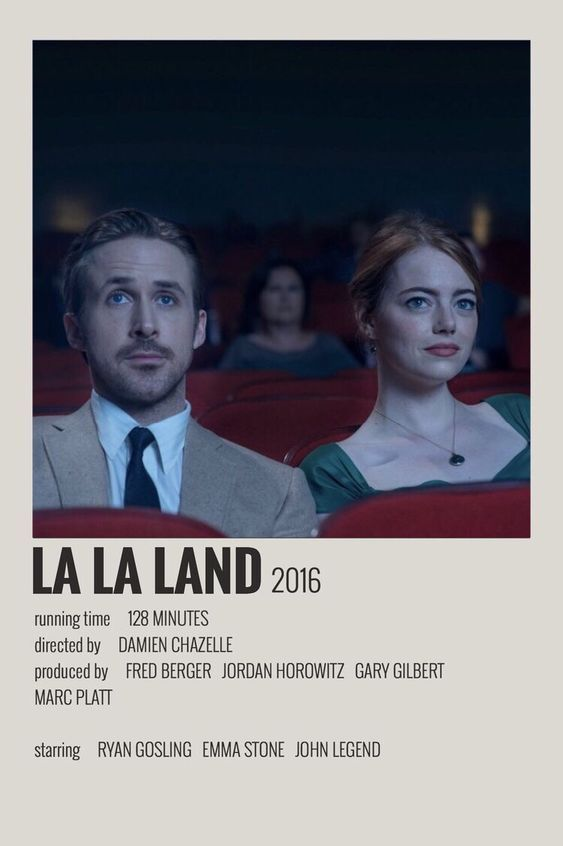

Synopsis: Much to his surprise, timid Joel Barish is shocked to discover that the love of his life, sparky Clementine, has had him erased from her memory. As a result, hurt and angry, Joel wants to pay her back in the same coin, going as far as to undergo a painless but intricate medical procedure to do the same. However, poor Joel is utterly unaware that darkness is an essential part of the light. And as the once-cherished recollections of Clementine gradually fade away, giving way to a soulless black void, something unexpected happens. Now Joel has second thoughts, toying with the idea of stopping the irreversible process. Who said ignorance is bliss?
Synopsis: Aspiring actress serves lattes to movie stars in between auditions and jazz musician Sebastian scrapes by playing cocktail-party gigs in dingy bars. But as success mounts, they are faced with decisions that fray the fragile fabric of their love affair, and the dreams they worked so hard to maintain in each other threaten to rip them apart
Synopsis: Theodore is a lonely man in the final stages of his divorce. When he's not working as a letter writer, his down time is spent playing video games and occasionally hanging out with friends. He decides to purchase the new OS1, which is advertised as the world's first artificially intelligent operating system, "It's not just an operating system, it's a consciousness," the ad states. Theodore quickly finds himself drawn in with Samantha, the voice behind his OS1. As they start spending time together they grow closer and closer and eventually find themselves in love. Having fallen in love with his OS, Theodore finds himself dealing with feelings of both great joy and doubt. As an OS, Samantha has powerful intelligence that she uses to help Theodore in ways others hadn't, but how does she help him deal with his inner conflict of being in love with an OS?